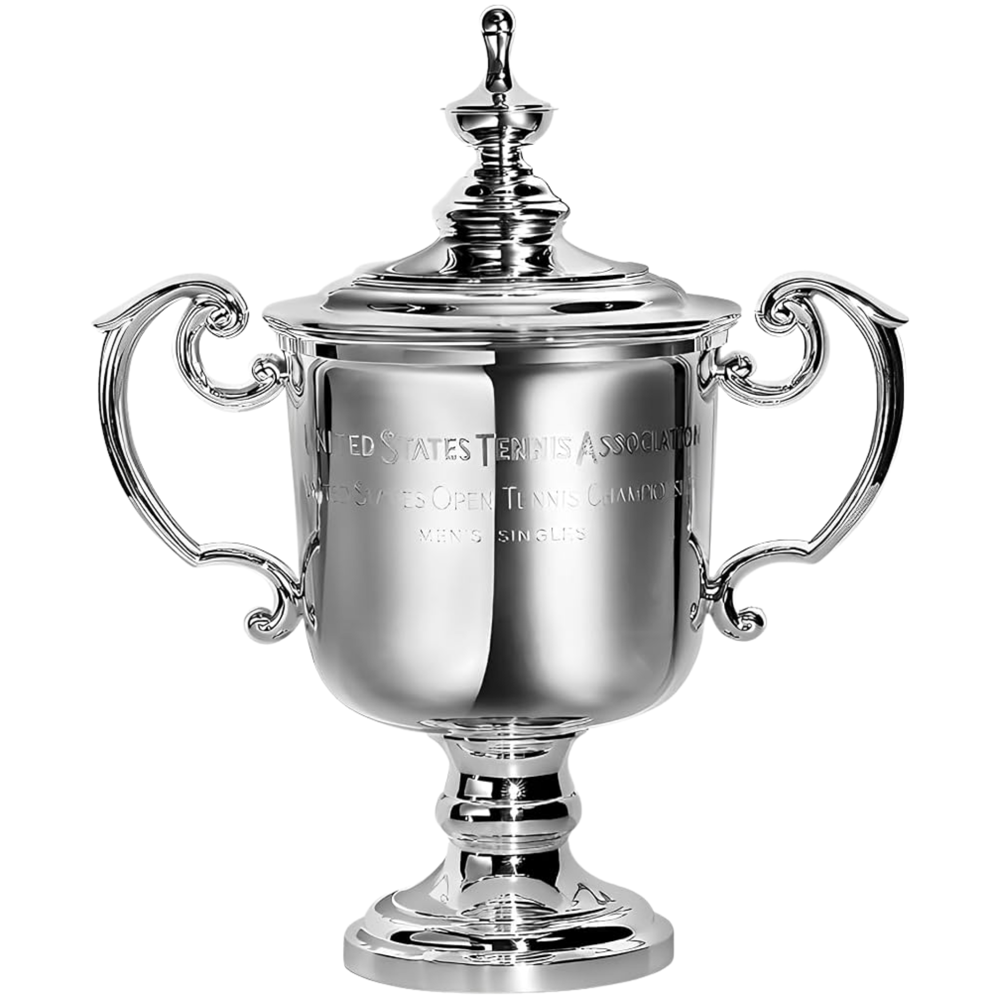

Favorito del modelo
--
Probabilidad de campeón: --
Probabilidad de campeón
Top jugadores del cuadro, según -- simulaciones Monte Carlo.
Cómo fluctuó la probabilidad de campeón
Una línea por jugador -- cada punto es la predicción "entrando a esa ronda", recalculada con los resultados reales ya jugados.
Aciertos del modelo por ronda
Favorito del modelo entrando a cada ronda (con los resultados reales de las rondas previas ya aplicados) comparado contra lo que pasó de verdad.
| Ronda | Aciertos | Fallos | % acierto |
|---|
Cuadro proyectado
Un solo camino de favoritos (probabilidad exacta del modelo, sin Monte Carlo). Los cruces ya jugados quedan marcados según le haya ido al modelo; pasá el mouse sobre cualquiera para ver el detalle.
✓Acertado — el modelo tenía a este ganador
✗Fallado — ganó el otro jugador
Sin jugar — proyección del modelo, con su %
Cuadro completo
Los jugadores eliminados bajan al fondo de la tabla y quedan marcados en gris.